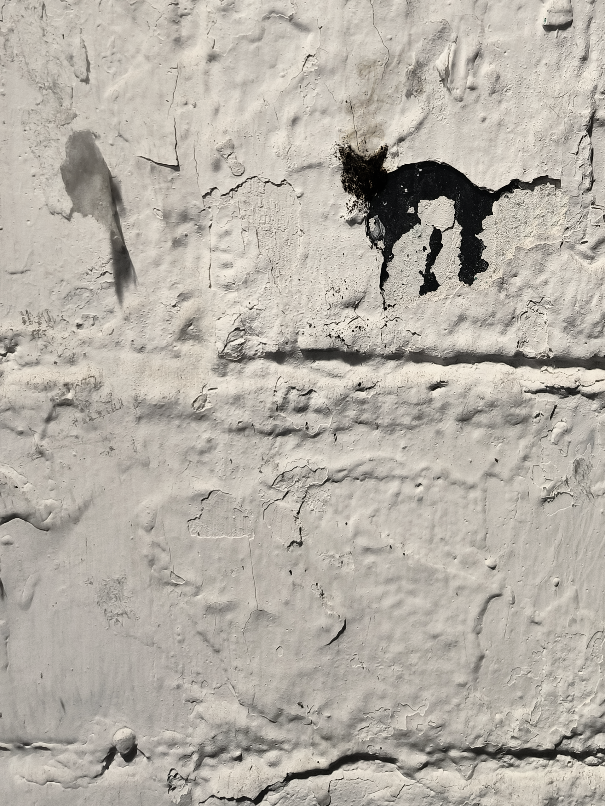
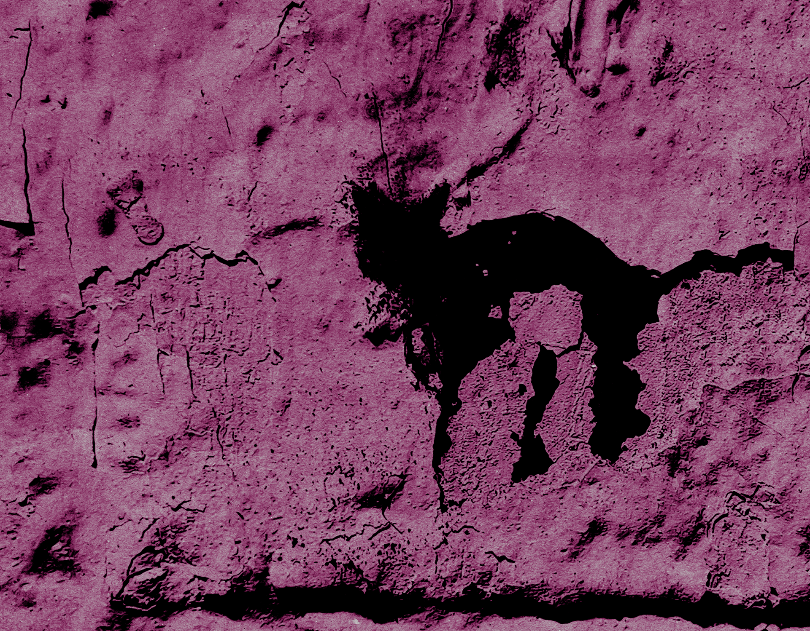

Меня всегда привлекал хаос — неважно, алгоритмический он или человеческий. Когда я делаю плакат или какую-нибудь фотожабу, то в самом конце всегда добавляю немного шума и общую цветокоррекцию. Это нужно для того, чтобы все слои сцепились воедино. Точно так же время и хаотичность скрепляют между собой слои, людей и места


Важна даже не целая картинка, а детали. Те, кто гулял со мной, видели, как заворожённо я рассматриваю вывески, листовки, написанные от руки, потрескавшуюся краску и другой человеческий хаос.
Место, где я сделал эту фотографию, удивительно тем, что я снимал эту стену много раз и даже использовал её в одном из старых плакатов. Из-за того, что менялись правила, ЖКХ и многое другое, она каждый раз выглядела по-разному. И самое главное — я всегда находил в ней что-то новое
В этот раз это был кот
